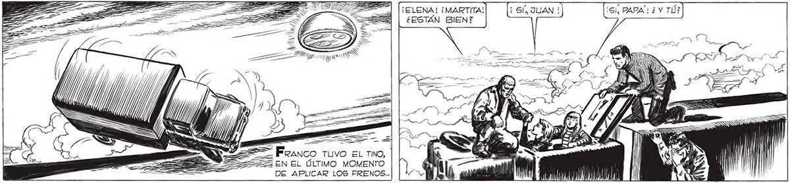
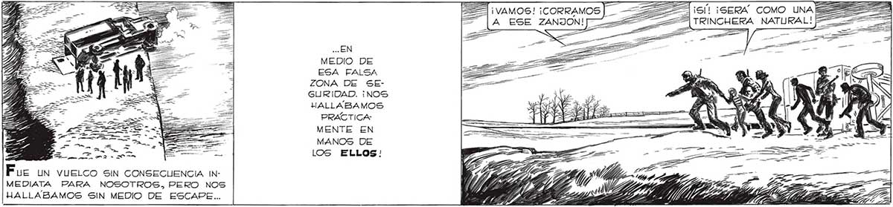
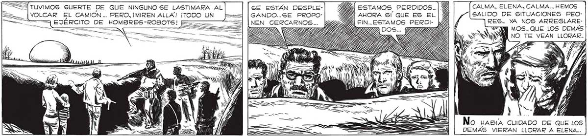

¡ELENA! ¡MARTITA! ¡Sl PAPA! ¿ Y TÚ? 345 ¿ESTÁN BIEN? ES EN EL ÚLTIMO MOMENTO DE APLICAR LOS FRENOS... Ny S ¡VAMOS! ¡CORRAMOS 22 7 6/1 ¡SERA COMO UNA E A ESE ZANION!] 4%] TRINCHERA NATURAL! z . Y ... EN Y, MEDIO DE E ESA FALSA 4 ZONA DE SEES / z GURIDAD. ¡NOS BES HALLABAMOS HD PRACTICA ZO MENTE EN SL, MANOS DE $ 1OS ELLOS! Fue un vuelco SiN CONSECUENCIA IN- IMITAR TS RE DN MEDIATA PARA NOSOTROS, PERO NOS 7 ¡E ALI HALLABAMOS SIN MEDIO DE ESCAPE... E Y IES sil LES MAIZ ? zz TUVIMOS SUERTE DE QUE NINGUNO SE LASTIMARA AL SE ESTÁN DESPLE- CALMA, ELENA, CALMA ... HEMOS VOLCAR EL CAMION ... PERO, ¡MIREN ALLA! ¡TODO UN >. GANDO..SE PROPO- ; SALIDO DE SITUACIONES PEO= EJÉRCITO DE _HOMBRES-ROBOTS! : — NEN_CERCARNOS... | IAS po No LABIÍA CUIDADO DE QUE LOS DEMAS VIERAN LLORAR A ELENA...


